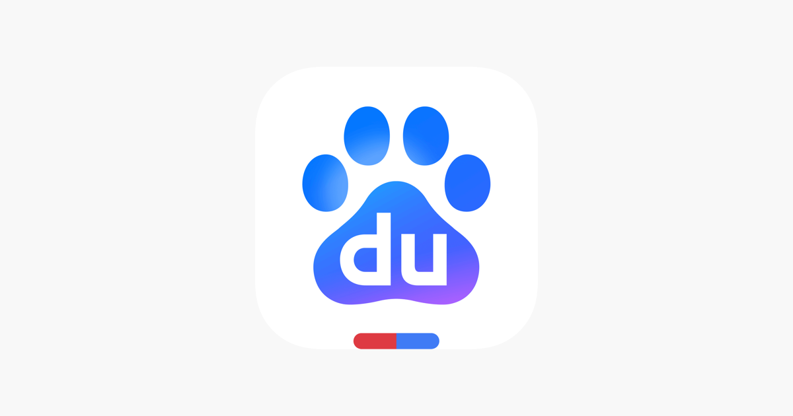

■ 说透 / SHUOTOU · 知览
SUBTITLE
百度 2025 年利润暴跌 76%，财报里首次把广告收入折叠进其他分项不单独披露，与此同时中国 AI 搜索月活已达 6.85 亿、Z 世代超 40% 已把 AI 当主要搜索入口，这不是百度被某个对手打败，而是用户的搜索习惯正在经历一次结构性的、不太可能逆转的迁移。

百度2025年全年利润暴跌了76%。这个数字单独看已经够吓人了，但更值得琢磨的是财报里一个不太显眼的变化——百度首次没有单独披露广告收入。
你得知道，广告收入是百度财报里二十年来的核心指标，投资人看百度，第一眼看的就是广告卖了多少钱。这个数字过去每个季度都单列一行，清清楚楚。但从这份财报开始，它被折叠进了"其他收入"里，跟一堆杂七杂八的业务混在一起，不再单独出现了。
说白了，财报是公司跟投资人对话的工具。你把一个指标单独列出来，意思是"这是我们的亮点，请看"；你把它塞进杂项里不提，意思是"这个数字我不太想让你单独盯着看了"。一家公司主动把自己二十年的核心指标藏起来，这个动作本身比任何数字都说明问题。
— 01 —
百度的76%和6.85亿
同一时期，多份行业报告显示，2025年中国AI搜索类应用的月活用户已经达到了数亿量级。
DATA — 中国AI搜索用户规模
数亿级 — 中国AI搜索类应用月活用户规模（多份行业报告）
76% — 百度2025年利润同比下降幅度
数亿是什么概念？中国网民总数大约10.8亿，也就是说相当大比例的中国网民已经在用AI搜索，这不是某个小圈子的尝鲜行为，是一个已经覆盖了大量网民的习惯变化。
而且你注意看用户结构，Z世代——就是2000年以后出生的这批人——里面有相当高的比例已经把AI当成了日常搜索的主要入口。不是偶尔试试，是默认行为。他们找东西的第一反应不是打开百度，是打开豆包、Kimi或者直接问通义千问。对这批人来说，"搜索"这个词的含义已经变了——不是在一个框里输入关键词然后翻结果，而是直接把问题说出来，等一个完整的回答。
那问题来了，百度自己不也在做AI搜索吗？而且做得还不小。
— 02 —
百度的3.65亿和一道单向门
确实，百度的AI搜索在所有单一平台里月活排第一，文心一言系列产品的用户规模也不小，你要是光看这组数据，会觉得百度在AI搜索这场仗里其实还行，至少市场份额摆在那儿，不是谁都能一下子追上来的。
而且分析师有另一种解读——利润暴跌76%，不是因为业务萎缩，而是因为百度在疯狂砸钱投入AI基础设施。你想啊，建算力、训模型、改产品线，哪样不烧钱？按这个逻辑，利润下跌是主动投入的结果，不是被市场抛弃。
还有一个更细的反面证据：很多用户的实际行为是"问AI一个概念性的问题，但要找具体的餐厅、具体的商品、具体的网页，还是会回百度"。在用户调研里，AI搜索和传统搜索并不是完全的替代关系，而是各管一摊。
好，到这儿你可能觉得百度其实还好，至少基本盘还在，利润下跌有合理解释，用户也没有完全跑掉。
但这些反面证据解决不了一个核心问题。
我自己就是一个活生生的例子。大概半年前，我开始习惯性地把问题先丢给AI，不管是查一个概念、比较两个方案还是找一段代码的写法，AI给的回答直接、完整，不用在一堆广告和SEO垃圾里翻半天。用了两个月之后我发现，我打开百度的次数，嗯。。基本上可以忽略不计了。而且这个变化不是我刻意为之的，没有人跟我说"你该用AI搜索了"，是我自己用了几次之后身体记住了那个效率差，手指就自动往AI那边去了。这就是我说的"单向门"。
一旦你发现问AI比搜百度更快地拿到你要的答案，你的习惯就过了一道门。这道门的特点是——你很难再走回去。不是百度变差了，是你的预期被AI重新设定了。你已经知道"直接给我答案"是什么体验，再让你回去翻十页搜索结果、跳过三条广告、点进去发现是个复制粘贴的垃圾站——你回不去了。这跟当年大家从纸质地图迁移到手机导航是一回事，你用了高德之后不会再去买一本城市地图册，不是地图册变差了，是你对"找路"这件事的预期被永久地改写了。
而Z世代的情况更极端，他们中有相当大比例已经过了这道门，而且他们是在搜索习惯形成的年纪就直接进了AI搜索，根本没有"先用百度再迁移到AI"这个过程，对他们来说百度不是被替代的东西，是从一开始就不在选项里的东西。
你想啊，Z世代是未来十年的主力消费群体，广告商投广告，最终投的是消费者的注意力，如果下一代消费者的注意力入口不再经过百度，那百度的广告价值会怎么变化？嗯。。这大概也是百度选择不再单独披露广告收入的原因之一。
Gartner预测2026年全球传统搜索引擎的查询量会下降25%。这是全球的数字，而中国的速度可能更快——国产大模型的周调用量已经连续5周超过美国，前六名全是中国模型，豆包、Kimi、通义千问、文心一言，用户的选择多得很，根本不缺替代品。而且这些产品之间的竞争还在加速这个迁移过程，你用豆包觉得不够好可以换Kimi，换来换去反正都不会换回百度。每多一个AI搜索产品上线，百度面对的就不是多了一个对手，而是多了一扇让用户走出去的门。
所以百度面对的局面，不是"一个强大的对手在抢市场"，如果是那样的话，百度还能靠砸钱、靠产品力、靠既有的用户规模去打一场仗。但实际发生的事情是——用户的搜索习惯在发生一次结构性的迁移，迁移的方向是从"我去搜"变成"我去问"，而这个迁移对每一个传统搜索引擎都是一道单向门，百度只是因为体量最大，所以跌得最显眼。
说白了，百度的AI搜索月活、文心一言的用户规模，这些数字在当下是真的，但数字不能告诉你的是，那些已经过了门的Z世代，十年后比例只会更高，他们不会回头，而他们后面的人只会更少打开百度。
百度不是被某个对手打败的，它是被一种新的用户习惯绕过去的——这种习惯一旦形成，就很难再拐回来。
> 二十年前中国人因为百度戒掉了翻字典，现在被戒掉的是百度自己。
— 03 —
ZAYEN知览
说透 · SHUOTOU · 知览